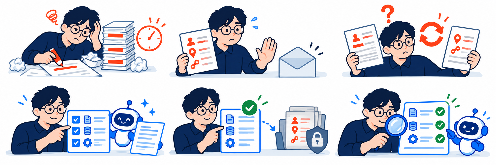

수작업 의존
민감 값을 지우고 문의문을 다시 씀

선택·검토에 집중
고른 사실로 AI가 문의문 작성
시간·비용 계산 예시 · 실측 아님
50% 작업 시간 감소
10분 → 5분/건 가정 · 월 25만원 절감
월 100건 × 5분 × 인건비 3만원/시간
민감 값을 지우고 문의문을 다시 씀

고른 사실로 AI가 문의문 작성
시간·비용 계산 예시 · 실측 아님
50% 작업 시간 감소
10분 → 5분/건 가정 · 월 25만원 절감
월 100건 × 5분 × 인건비 3만원/시간
가려도 남는 고객 정보·내부 수치
원본은 사내에 두고 공유본을 새로 작성
코드 검증 · 가상 10건 · 고정 응답
41개 → 0개
남는 공개 금지 항목 수
단순 정규식 가림 대비 · 전체 금지 항목 48개
필수 정보가 빠져 문의를 다시 준비
승인 사실과 초안을 대조해 누락을 확인
코드 검증 · 가상 10건 · 고정 응답
32 / 32개 100% 보존
필수 조사 단서의 포함 여부 확인
재질문·반복 감소 효과는 후속 측정